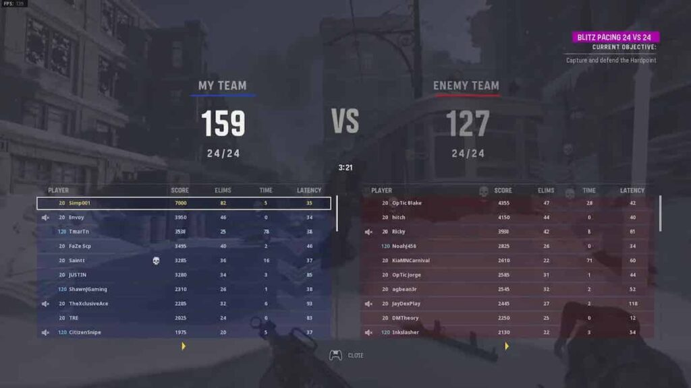
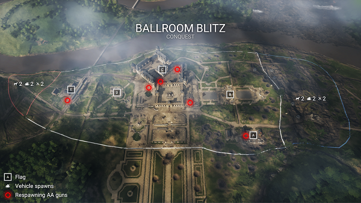
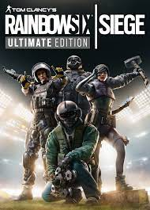
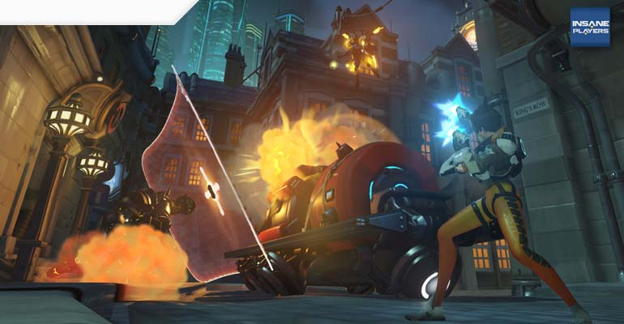

Shooters
Estos tipos de videojuegos estan basados en el multijugador y estan en primera persona
para que el jugador se sienta como el soldado con el que esta jugando,
normalmente estos juegos suelen ser por equipos(aunque existen 1 vs 1
en estos) haciendo que la experiencai multijugador se sienta mucho más.
En estos hay varios modos de juegos: Deadmatch,Dominio,Buscar y destruir, proteger la carga.
-Deadmatch Este modo de juego esta basado en matar al equipo enemigo tantas veces como puedas y de esta manera
ganar, el equipo que realize 75(en algunos casos más) asesinatos o que
más kills tenga al final de la partida es el que gana, este modo es muy
importante en la franquicia COD

-Dominio:El modo se basa en capturar unas
zonas las cuales te dan puntos por segundos, quien consiga un mayor
número de puntos al final del tiempo es el equipo que gana,la
franquicia Battlefield
es muy conocida por este modo de juego ya que estos tienen unos mapas
muy grandes en los cuales hay veículos haciendo que viajar por el mapa
sea mucho más facil.

-Buscar y destruir:Este modo es mucho menos
frenetico ya que esta basado en un modo mucho más tranquilo en el cual
se juega de manera mucho más tactica ya que se basa en defender un
objetivo mientras que el otro equipo lo ataca, haciendo que las
partidas sean más largas y con muchos menos asesinatos,Un juego que
destaca por este estilo de juego es Tom Clancy's Rainbow Six: Siege
, el cual tiene una serie de operadores con hablidades únicas las
cuales te ayudan a defender y atacar el objetivo, haciendolo en mi
opnión el mejor juego si quieres probar este modo de juego.

-Proteger la carga:Es uno de los modos más destacados en varias franquicias(OW,Tema Fortress 2),
este modo esta basado en estar junto una carga la cual se movera
dependiendo de la cantidad de gente junto a la carga,normalmente un
equipo defiende intentando echar la carga lo más atras posible mientras
que otro intenta avanzar con una serie de puntos en los cuales la carga
no puede retroceder, estos modos tienen un timer para que las partidas
no sean infinitas.
